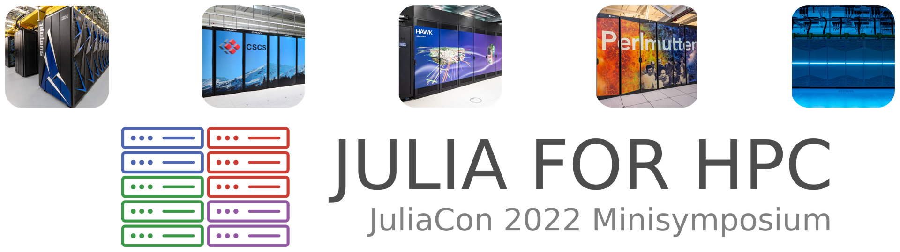

Ludovic Räss
JuliaCon is the conference dedicated to the Julia programming language. The conference is fully virtual this year and talks run from July 27th through July 29th, 2022 with workshops running the previous week. Find out more at https://live.juliacon.org/about.
Monday July 25 - Differentiable Earth system models in Julia minisymposium
Don't miss the Differentiable Earth system models in Julia minisymposium at JuliaCon2022 conference on Monday July 25 2022.
Presentations
| Time | Title | Presenter |
|---|---|---|
| 16:00 - 16:15 CEST | GPU-accelerated optimisation | Ludovic Räss (ETH Zurich) |
| 16:15 - 16:30 CEST | Examples of using gradients in the Solid Earth geosciences | Boris Kaus (JGU Mainz) |
Live stream recording available on YouTube:
Tuesday July 26 - Julia for HPC minisymposium
Don't miss the Julia for HPC minisymposium at JuliaCon2022 conference on Tuesday July 26 2022.
The "Julia for HPC" minisymposium aims to gather current and prospective Julia practitioners in the field of high-performance computing (HPC) from multidisciplinary applications. We invite participation from industry, academia, and government institutions interested in Julia’s capabilities for supercomputing. The goal is to provide a venue for Julia enthusiasts to share best practices, discuss current limitations, and identify future developments in the scientific HPC community.
👉 Find all the related material on the juliacon-2022-julia-for-hpc-minisymposium JuliaParallel GitHub repo.
Presentations
| Time | Title | Presenter |
|---|---|---|
| 16:05 - 16:15 CEST | Scalability of the Julia/GPU stack | Samuel Omlin (CSCS) |
| 17:35 - 17:50 CEST | Julia and GPU-HPC for geoscience applications | Ludovic Räss (ETH Zurich) |
Live stream recording available on YouTube:
- Scalability of the Julia/GPU stack
- Julia and GPU-HPC for geoscience applications
Wednesday July 27 - JuliaCon main conference
During the main conference, there will be 4 presentations scheduled by members of the GPU4GEO project. Stay tuned and follow live on YouTube or on https://live.juliacon.org/ (free registration needed).
Presentations
| Time | Title | Presenter |
|---|---|---|
| 14:00 - 15:00 CEST | Julia to the NEC SX-Aurora Tsubasa Vector Engine | Valentin Churavy, Erich Focht |
| 15:00 - 15:30 CEST | Teaching GPU computing, experiences from our Master-level course | Ludovic Räss, Samuel Omlin, Mauro Werder |
| 15:00 - 15:30 CEST | Fast Forward and Reverse-Mode Differentiation via Enzyme.jl | Valentin Churavy, William Moses, Ludger Paehler, Tim Gymnich |
| 15:40 - 15:50 CEST | GPU4GEO - Frontier GPU multi-physics solvers in Julia | Ludovic Räss, Ivan Utkin, Albert De Montserrat, Boris Kaus, Samuel Omlin |
| 17:20 - 17:30 CEST | High-performance xPU Stencil Computations in Julia | Samuel Omlin, Ludovic Räss |
| 17:30 - 17:40 CEST | Distributed Parallelization of xPU Stencil Computations in Julia | Samuel Omlin, Ludovic Räss, Ivan Utkin |